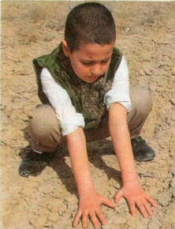
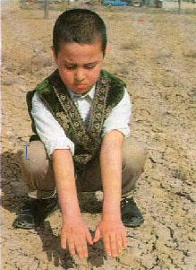
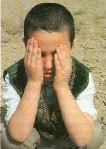
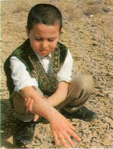
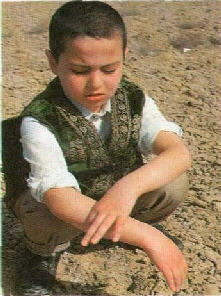
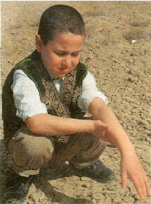
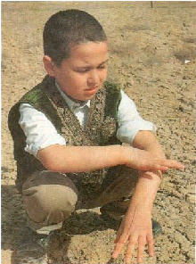

TEYEMMÜM NASIL YAPILIR? (*)
Önce kollar abdest alacakmýþ gibi sývanýr. Eûzü Besmele çekilir.
"Abdestsizlikten veya cünüplükten temizlenmeye" diyerek niyet
edilir.
Sonra parmaklar açýlýr, ellerin iç kýsýmlarý temiz
topraða veya toprak cinsinden bir þeyin üzerine hafifçe vurularak, önce
ileri sonra geri çekilerek sürülür.
|
 |
|
 |
 |
|
Eller kaldýrýlýp hafifçe birbirine vurularak silkelenir. |
Yüzün her yeri bu iki elin iç kýsýmlarý ile meshedilir. |
|
Sonra elin iç kýsýmlarý ayný þekilde tekrar topraða vurulur. Önce sol elin baþ ve iþaret parmaklarý ayrýlýr, kalan üç parmaðýn içiyle sað kolun iç yüzü parmak uçlarýndan dirseklerle beraber meshedilir. |
|
 |
 |
| Sol elin iç tarafýyla, sað kolun iç yüzü meshedilir. | Sað kolun dýþ tarafý da yine ayný sol elin ayrýlan baþ ve iþaret parmaðýyla meshedilir. |
|
Ayný þekilde bu defa da sað el kullanýlarak sol kol meshedilir. |
|
 |
 |
| Önce, sað elin baþ ve iþaret parmaklarý ayrýlýr, kalan üç parmaðýn içiyle sol kolun iç yüzü parmak uçlarýndan dirseklerle beraber meshedilir. | Sol kolun dýþ tarafý da ayný þekilde sað elin ayrýlan baþ ve iþaret parmaklarýyla meshedilir. |
Böylece yüzün,
ellerin ve kollarýn meshedilmedik hiç bir yeri býrakýlmamakla, farzlarýna
ve sünnetlerine uygun bir teyemmüm yapýlmýþ olur.
(*) UYSAL,
Asým ve Mürþide, Ýzahlý Kadýn Ýlmihali Ansiklopedisi, Uysal Kitabevi,
s.157-160